⚡
Live, in real time
Players join by 6-digit PIN or QR code from any device, no account, and get a generated avatar. A Socket.IO engine with authoritative server timing keeps everyone in step — a handful or a few hundred.
QuizDock is an open-source, self-hosted live quiz platform with bright, projector-ready screens. Players join by PIN or QR with no account, and your data never leaves your servers.
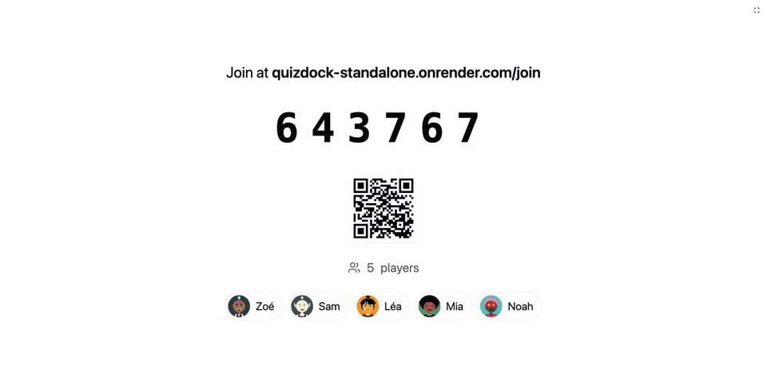
Enter a name, take the host seat, present a sample quiz — and open the join link on your phone.
Public instance: it sleeps when idle (first load ≈ 1 min), everything is wiped every hour, the host seat lasts 5 minutes at a time, uploads are off.
Five things QuizDock does well. The complete list is further down.
Players join by 6-digit PIN or QR code from any device, no account, and get a generated avatar. A Socket.IO engine with authoritative server timing keeps everyone in step — a handful or a few hundred.
Bright, high-contrast projection screens, with separate projection and control windows. Pace by hand or automatically, look back over any played question, survive a server restart.
Seven question types — single / multiple choice, true-false, text, numeric, ordering, poll — with images, Markdown everywhere, content slides between questions, backgrounds and answer explanations — and, experimental, video & sound.
Time-weighted points, streak bonuses, leaderboard between questions, final podium. Per question: closest answer wins, partial credit, typo-tolerant text, double or fixed points.
One Docker image (amd64 / arm64), no SaaS, no tracking, no ads. Five interface languages, rebrand name, logo and CSS without a rebuild. The questions, the answers and the results stay on your servers.
Build a quiz, hit present — the console shows a PIN, a QR code and the address participants will reach.
No account, no install. They pick a nickname and they are in the lobby instantly.
Answer in real time, look back at any question, crown the podium, then explore results and export to CSV.
Same image, one switch: AUTH_MODE decides who can host. Players never sign in, in either mode.
A classroom, a meeting room, a trusted network.
Hosts sign in through your identity provider.
host role is granted from the IdP.The complete list — what you get once a session runs.
quiz.json + media, zipped): back it up, move it, share it — from the app or the CLI.quizdock init / up / backup / upgrade / doctor: guided setup and day-to-day admin, Docker only.App and database in a single container — nothing else to install. Data persists in the quizdock volume.
docker run -p 18080:3000 -v quizdock:/data fchaussin/quizdock:standalone
# then open http://localhost:18080
Production with a dedicated database, the quizdock script, OIDC, white-label:
it is all in the self-hosting guide.
Every screen, from the quiz builder to the projector, the player and the podium.
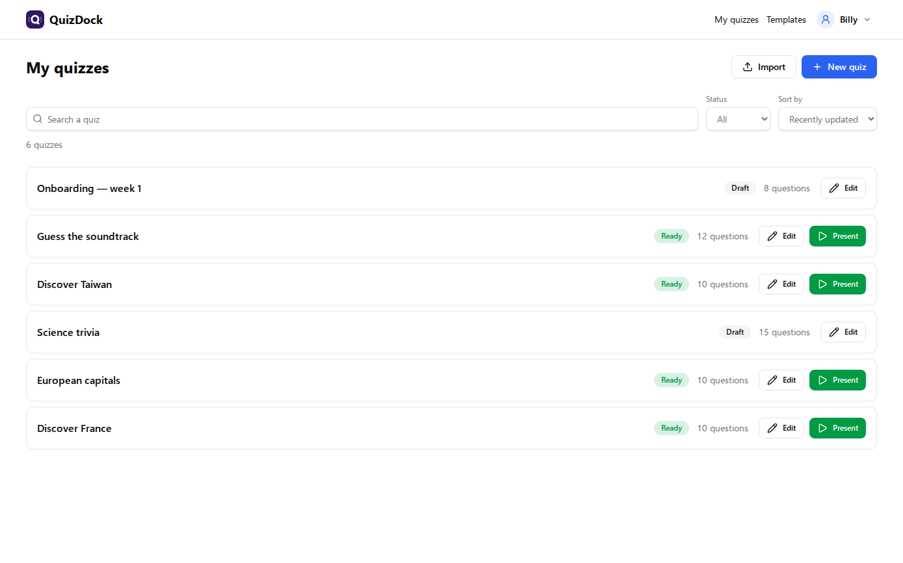
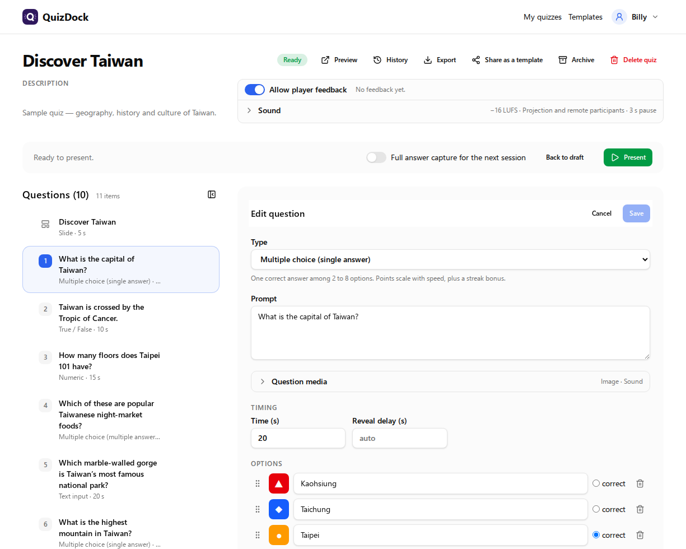
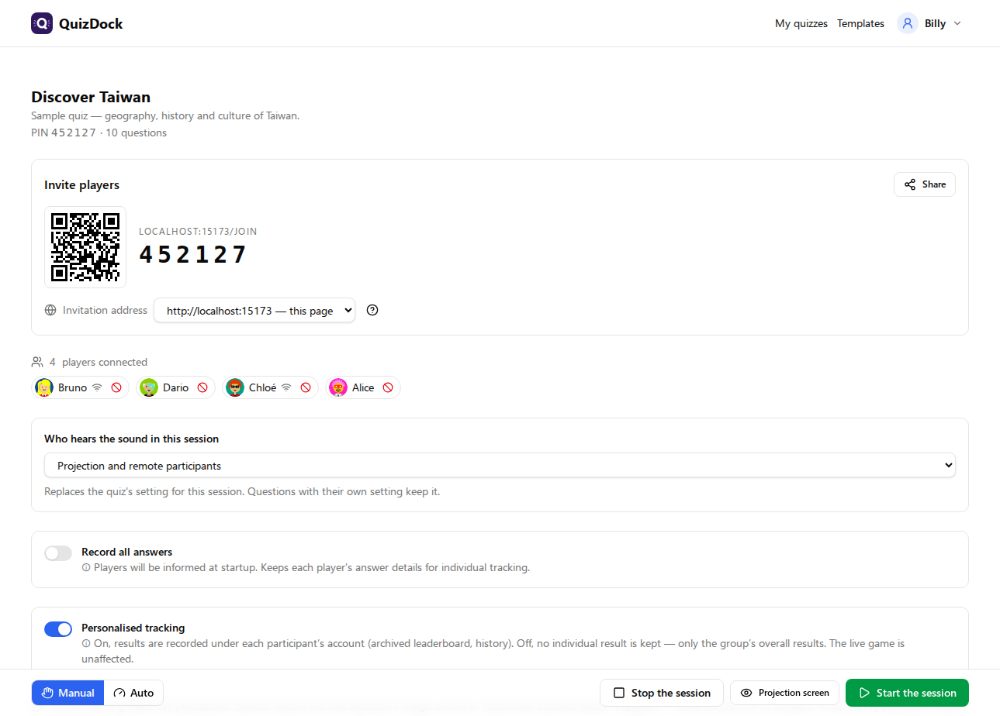
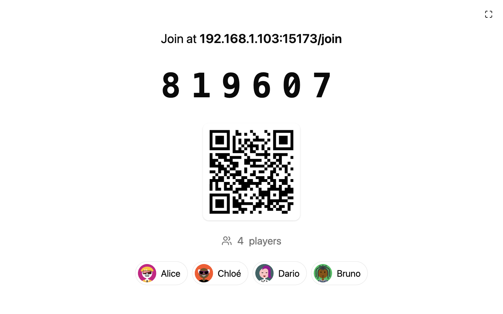
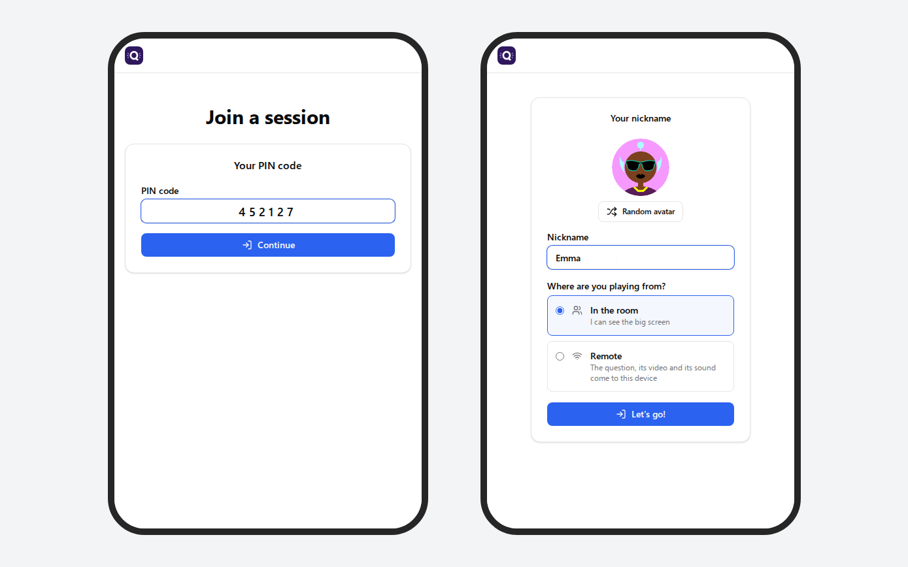
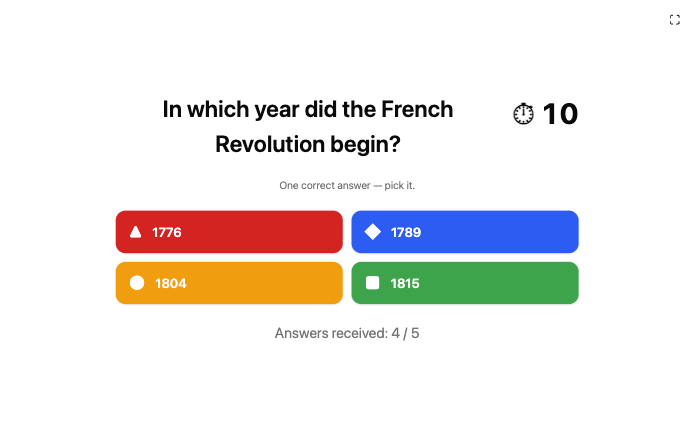
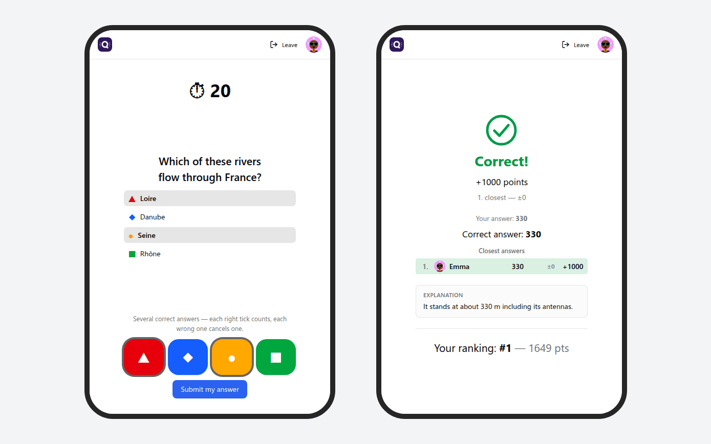
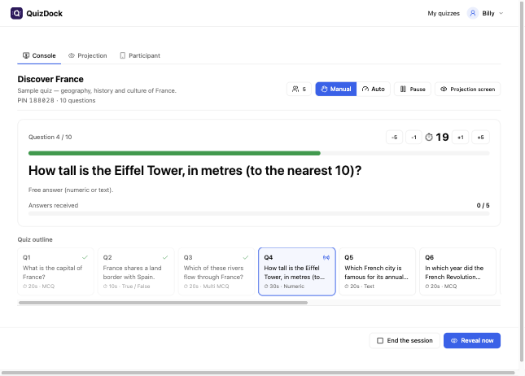
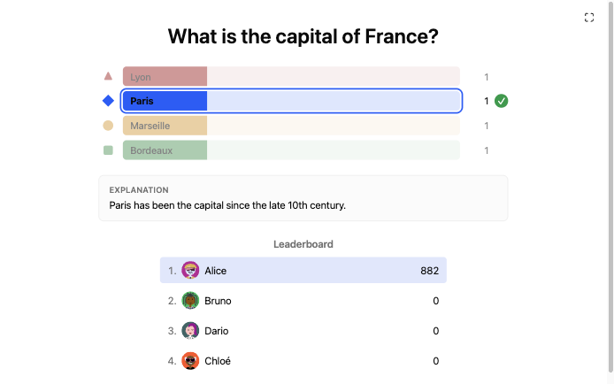
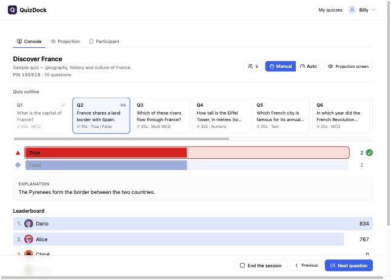
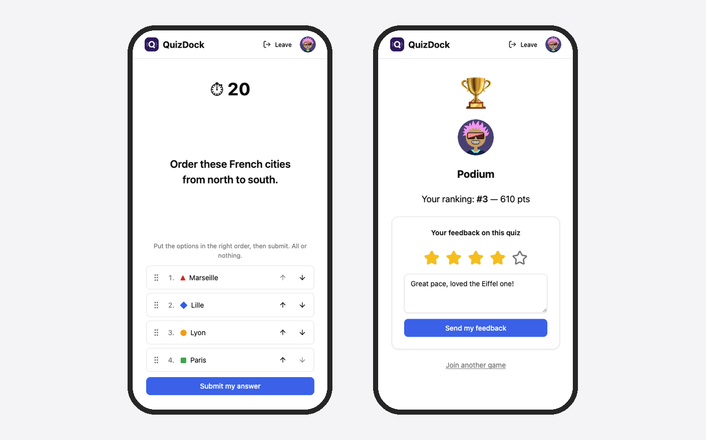
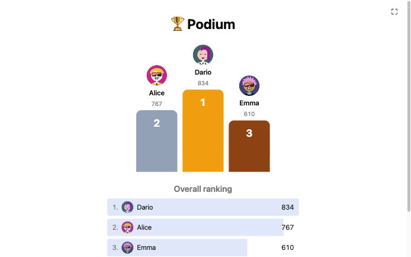
Try the demo, pull the image, star the repo — and run it where your data belongs.